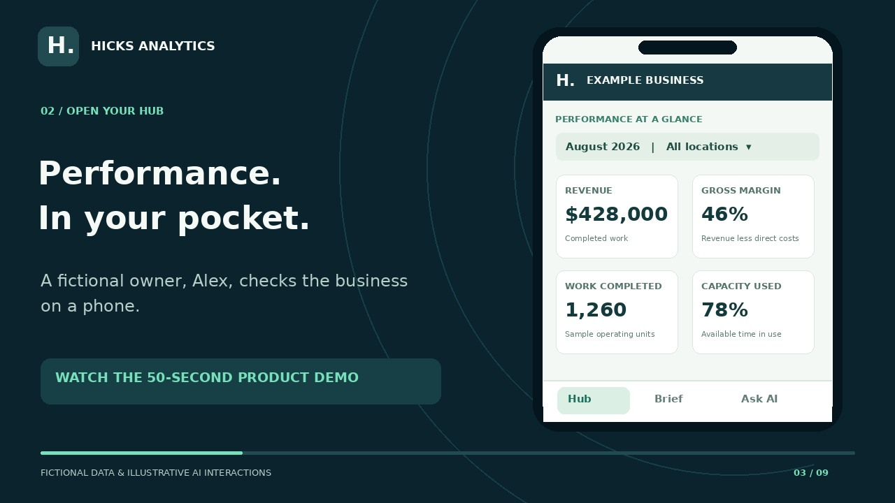

Landscaping
Which jobs and crews protect margin? Explore job profitability, labor variance, estimates, and service areas.
Explore landscaping demoData, analytics & AI consulting
I help small and midsize businesses connect operational and financial data, define reliable metrics, and build reporting and AI workflows around the decisions that matter.

No full-time analytics hire required.
AI-Ready Data & Analytics
Your operational and financial data may be spread across systems that do not speak the same language. I connect the pieces, establish trusted metrics, and build the business context that makes reporting, automation, and AI useful.
Start with the systems you already use.
One shared foundation for your team, your reports, and your AI workflows.
Bring scattered sources together.
Build a foundation you can trust.
Agree on what the numbers mean.
Give the data shared meaning.
Make the answers easy to use.
Put trusted data to work.
Explore each stage to see the work behind it. Your engagement starts where you need help.
Business context, made concrete
If a dashboard and an AI assistant interpret “revenue” differently, the answers will disagree. Shared definitions keep both grounded in your business rules.
Recognized revenue = posted invoice amounts, less credits; excludes sales tax and unaccepted estimates.
“What changed in revenue this month?” uses that same definition, reporting period, and approved data in both places.
See the work · 50-second analytics demo
See a fictional owner explore performance, read a daily brief, and ask about the numbers. Then imagine the same experience with your own data and the questions that matter to you.
Fictional data and illustrative AI interactions · Original music; on-screen text tells the story · Client metrics, sources, and AI access are tailored during setup.
From job margins to clinic capacity, product sales, or professional-service pipelines, I build the analytics around your business. The industry demos below are examples of what is possible. Book a free strategy call to talk through your data.
A fictional owner opens a mobile Performance Hub, reviews revenue, gross margin, completed work, and capacity, then filters by location. A daily brief highlights a margin gap. Illustrative AI questions explore the highest-margin service and available capacity. The same product can be tailored to service businesses, clinics, retail, professional services, or other businesses with useful data. A 14-day free trial begins with one question and a focused set of measures.
Practical analytics for real businesses
Many businesses already have valuable information in Excel, accounting systems, scheduling tools, CRMs, and operational platforms. The challenge is bringing it together and turning it into something leaders can trust.
Consulting in practice
For any company with data and decisions to make: connected data, consistent metrics, and reporting built around your needs. See what changed, explore the details, and ask clearer questions.
From scattered data to a decision
Every engagement starts with an agreed business question and trusted measures. Your dashboard and brief help you spot the signal; an AI Assistant can help explore the available data when the privacy and data setup support it.
Bring together the reports and sources already running your business.
Track a focused set of validated KPIs in reporting tailored to your team.
Use plain-English questions to investigate what the available numbers show.
Get a clear brief and decide what to investigate or improve next.
EXAMPLE BUSINESS · AUGUST 2026
Which service has the highest margin?
Specialty leads at 57% gross margin. Compare its volume and capacity before expanding it.
Tailored to different businesses
The analytics video shows the shared experience. These fictional industry demos show how the measures and questions can change with your business. Your industry can be different, too.
Which jobs and crews protect margin? Explore job profitability, labor variance, estimates, and service areas.
Explore landscaping demoWhere are callbacks and margin pressure showing up? Compare technician quality, job costs, sales, and agreements.
Explore HVAC demoWhere does intake lose momentum? Review response time, signed-case conversion, sources, and the matter pipeline.
Explore legal demoWhich properties need attention first? Bring occupancy, collections, maintenance, and NOI into one portfolio view.
Explore property demoWhere can the practice use capacity better? Compare appointments, open chair time, treatment acceptance, and revenue.
Explore dental demoWhat is selling, and what is profitable? Compare sales, food costs, labor, menu contribution, and location performance.
Explore restaurant demoDon't see your industry? The work is scoped around the data and decisions in your business. Tell me what you want to answer in a free trial. The landscaping example includes a fictional-data AI experience; the other links show interactive dashboards. Client AI is scoped after the data and privacy setup are agreed.
AI Readiness Assessment
Get a clear picture of your business data and a practical plan for analytics, AI agents, and automation. I review your systems, metrics, data quality, and access needs, then identify the work that will make the biggest difference.
What you take away
Where information lives, how systems connect, and where fragmented or manual reporting creates gaps.
The business rules behind the KPIs you need, with data-quality and access issues that could affect reporting or AI answers.
What to address first, which analytics and AI use cases are feasible, and the next steps, dependencies, and estimated effort.
14-day free trial
Start with one business question and a manageable set of data.
A focused dashboard can be the trial deliverable instead. We agree on the scope before starting.
Broader consulting engagement
Build a roadmap across your operational and financial systems.
Quoted after a scoping call. Implementation and ongoing support are agreed separately.
Free trials are approved individually after a short conversation and begin once scope and sample data are agreed. No credit card and no automatic paid plan. The assessment is a readiness review; integrations, extensive cleanup, production agents, and security certification are outside the free scope.
Use the findings to guide your own team, or work with Hicks Analytics on data engineering, reporting, agent implementation, automation, and recurring analytics support.
Services
Engage Hicks Analytics for a focused project, recurring monthly support, or ongoing fractional analytics leadership.
Build clear, decision-ready dashboards in Power BI, Qlik, Tableau, or your preferred platform.
Reduce repetitive work by improving the way data is collected, connected, and refreshed.
Get experienced analytics guidance without the cost of hiring a full-time employee.
Make your business data useful for reporting and AI. I connect and clean your operational and financial data, define consistent KPIs, and organize the business context an AI assistant needs to answer meaningful questions.
Start with the data and reporting you need today. Add AI questions, summaries, and workflows as your data becomes ready, with access controls, validation, and documentation built into the scope.
Ways to work together
Choose a focused data review, an analytics and AI readiness project, or ongoing support. Each engagement is scoped around your systems, priorities, and budget.
Best place to start
A practical review of your systems, data quality, KPI definitions, and readiness for analytics, AI agents, and automation.
Project consulting
Connect your systems, establish trusted business metrics, and create a foundation for dashboards, AI assistants, and automated analysis.
Ongoing partnership
Ongoing support to keep your dashboards reliable, current, and improving as your needs change.
How it works
We discuss your current reports, pain points, systems, and the decisions you need to make.
I create a focused plan that improves visibility without adding unnecessary complexity.
You receive a usable solution, documentation, and ongoing support when needed.
About Hicks Analytics
Hicks Analytics was founded to help businesses get more value from their data through clear reporting, thoughtful analysis, and practical automation.
With more than a decade of experience in data analytics and analytics engineering, including deep experience in healthcare, I understand both the technical work behind the numbers and the business conversations that make analytics useful.
My approach is straightforward: listen carefully, solve the right problem, communicate clearly, and build something your team can actually use.
Start a conversation
A short conversation is often enough to identify where better reporting, automation, or analytics support could make the biggest difference.